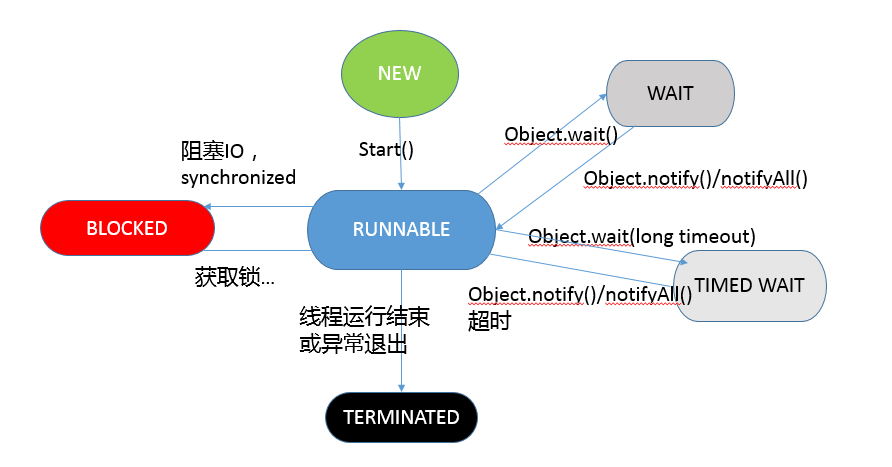

- 00 开篇词 以面试题为切入点，有效提升你的Java内功.md
- 01 谈谈你对Java平台的理解？.md
- 02 Exception和Error有什么区别？.md
- 03 谈谈final、finally、 finalize有什么不同？.md
- 04 强引用、软引用、弱引用、幻象引用有什么区别？.md
- 05 String、StringBuffer、StringBuilder有什么区别？.md
- 06 动态代理是基于什么原理？.md
- 07 int和Integer有什么区别？.md
- 08 对比Vector、ArrayList、LinkedList有何区别？.md
- 09 对比Hashtable、HashMap、TreeMap有什么不同？.md
- 10 如何保证集合是线程安全的_ ConcurrentHashMap如何实现高效地线程安全？.md
- 11 Java提供了哪些IO方式？ NIO如何实现多路复用？.md
- 12 Java有几种文件拷贝方式？哪一种最高效？.md
- 13 谈谈接口和抽象类有什么区别？.md
- 14 谈谈你知道的设计模式？.md
- 15 synchronized和ReentrantLock有什么区别呢？.md
- 16 synchronized底层如何实现？什么是锁的升级、降级？.md
- 17 一个线程两次调用start()方法会出现什么情况？.md
- 18 什么情况下Java程序会产生死锁？如何定位、修复？.md
- 19 Java并发包提供了哪些并发工具类？.md
- 20 并发包中的ConcurrentLinkedQueue和LinkedBlockingQueue有什么区别？.md
- 21 Java并发类库提供的线程池有哪几种？ 分别有什么特点？.md
- 22 AtomicInteger底层实现原理是什么？如何在自己的产品代码中应用CAS操作？.md
- 23 请介绍类加载过程，什么是双亲委派模型？.md
- 24 有哪些方法可以在运行时动态生成一个Java类？.md
- 25 谈谈JVM内存区域的划分，哪些区域可能发生OutOfMemoryError_.md
- 26 如何监控和诊断JVM堆内和堆外内存使用？.md
- 27 Java常见的垃圾收集器有哪些？.md
- 28 谈谈你的GC调优思路_.md
- 29 Java内存模型中的happen-before是什么？.md
- 30 Java程序运行在Docker等容器环境有哪些新问题？.md
- 31 你了解Java应用开发中的注入攻击吗？.md
- 32 如何写出安全的Java代码？.md
- 33 后台服务出现明显“变慢”，谈谈你的诊断思路？.md
- 34 有人说“Lambda能让Java程序慢30倍”，你怎么看？.md
- 35 JVM优化Java代码时都做了什么？.md
- 36 谈谈MySQL支持的事务隔离级别，以及悲观锁和乐观锁的原理和应用场景？.md
- 37 谈谈Spring Bean的生命周期和作用域？.md
- 38 对比Java标准NIO类库，你知道Netty是如何实现更高性能的吗？.md
- 39 谈谈常用的分布式ID的设计方案？Snowflake是否受冬令时切换影响？.md
- 周末福利 谈谈我对Java学习和面试的看法.md
- 结束语 技术没有终点.md
17 一个线程两次调用start()方法会出现什么情况？
今天我们来深入聊聊线程，相信大家对于线程这个概念都不陌生，它是Java并发的基础元素，理解、操纵、诊断线程是Java工程师的必修课，但是你真的掌握线程了吗？
今天我要问你的问题是，一个线程两次调用start()方法会出现什么情况？谈谈线程的生命周期和状态转移。
典型回答
Java的线程是不允许启动两次的，第二次调用必然会抛出IllegalThreadStateException，这是一种运行时异常，多次调用start被认为是编程错误。
关于线程生命周期的不同状态，在Java 5以后，线程状态被明确定义在其公共内部枚举类型java.lang.Thread.State中，分别是：
新建（NEW），表示线程被创建出来还没真正启动的状态，可以认为它是个Java内部状态。
就绪（RUNNABLE），表示该线程已经在JVM中执行，当然由于执行需要计算资源，它可能是正在运行，也可能还在等待系统分配给它CPU片段，在就绪队列里面排队。
在其他一些分析中，会额外区分一种状态RUNNING，但是从Java API的角度，并不能表示出来。
阻塞（BLOCKED），这个状态和我们前面两讲介绍的同步非常相关，阻塞表示线程在等待Monitor lock。比如，线程试图通过synchronized去获取某个锁，但是其他线程已经独占了，那么当前线程就会处于阻塞状态。
等待（WAITING），表示正在等待其他线程采取某些操作。一个常见的场景是类似生产者消费者模式，发现任务条件尚未满足，就让当前消费者线程等待（wait），另外的生产者线程去准备任务数据，然后通过类似notify等动作，通知消费线程可以继续工作了。Thread.join()也会令线程进入等待状态。
计时等待（TIMED_WAIT），其进入条件和等待状态类似，但是调用的是存在超时条件的方法，比如wait或join等方法的指定超时版本，如下面示例：
public final native void wait(long timeout) throws InterruptedException;
- 终止（TERMINATED），不管是意外退出还是正常执行结束，线程已经完成使命，终止运行，也有人把这个状态叫作死亡。
在第二次调用start()方法的时候，线程可能处于终止或者其他（非NEW）状态，但是不论如何，都是不可以再次启动的。
考点分析
今天的问题可以算是个常见的面试热身题目，前面的给出的典型回答，算是对基本状态和简单流转的一个介绍，如果觉得还不够直观，我在下面分析会对比一个状态图进行介绍。总的来说，理解线程对于我们日常开发或者诊断分析，都是不可或缺的基础。
面试官可能会以此为契机，从各种不同角度考察你对线程的掌握：
相对理论一些的面试官可以会问你线程到底是什么以及Java底层实现方式。
线程状态的切换，以及和锁等并发工具类的互动。
线程编程时容易踩的坑与建议等。
可以看出，仅仅是一个线程，就有非常多的内容需要掌握。我们选择重点内容，开始进入详细分析。
知识扩展
首先，我们来整体看一下线程是什么？
从操作系统的角度，可以简单认为，线程是系统调度的最小单元，一个进程可以包含多个线程，作为任务的真正运作者，有自己的栈（Stack）、寄存器（Register）、本地存储（Thread Local）等，但是会和进程内其他线程共享文件描述符、虚拟地址空间等。
在具体实现中，线程还分为内核线程、用户线程，Java的线程实现其实是与虚拟机相关的。对于我们最熟悉的Sun/Oracle JDK，其线程也经历了一个演进过程，基本上在Java 1.2之后，JDK已经抛弃了所谓的Green Thread，也就是用户调度的线程，现在的模型是一对一映射到操作系统内核线程。
如果我们来看Thread的源码，你会发现其基本操作逻辑大都是以JNI形式调用的本地代码。
private native void start0();
private native void setPriority0(int newPriority);
private native void interrupt0();
这种实现有利有弊，总体上来说，Java语言得益于精细粒度的线程和相关的并发操作，其构建高扩展性的大型应用的能力已经毋庸置疑。但是，其复杂性也提高了并发编程的门槛，近几年的Go语言等提供了协程（coroutine），大大提高了构建并发应用的效率。于此同时，Java也在Loom项目中，孕育新的类似轻量级用户线程（Fiber）等机制，也许在不久的将来就可以在新版JDK中使用到它。
下面，我来分析下线程的基本操作。如何创建线程想必你已经非常熟悉了，请看下面的例子：
Runnable task = () -> {System.out.println("Hello World!");};
Thread myThread = new Thread(task);
myThread.start();
myThread.join();
我们可以直接扩展Thread类，然后实例化。但在本例中，我选取了另外一种方式，就是实现一个Runnable，将代码逻放在Runnable中，然后构建Thread并启动（start），等待结束（join）。
Runnable的好处是，不会受Java不支持类多继承的限制，重用代码实现，当我们需要重复执行相应逻辑时优点明显。而且，也能更好的与现代Java并发库中的Executor之类框架结合使用，比如将上面start和join的逻辑完全写成下面的结构：
Future future = Executors.newFixedThreadPool(1)
.submit(task)
.get();
这样我们就不用操心线程的创建和管理，也能利用Future等机制更好地处理执行结果。线程生命周期通常和业务之间没有本质联系，混淆实现需求和业务需求，就会降低开发的效率。
从线程生命周期的状态开始展开，那么在Java编程中，有哪些因素可能影响线程的状态呢？主要有：
线程自身的方法，除了start，还有多个join方法，等待线程结束；yield是告诉调度器，主动让出CPU；另外，就是一些已经被标记为过时的resume、stop、suspend之类，据我所知，在JDK最新版本中，destory/stop方法将被直接移除。
基类Object提供了一些基础的wait/notify/notifyAll方法。如果我们持有某个对象的Monitor锁，调用wait会让当前线程处于等待状态，直到其他线程notify或者notifyAll。所以，本质上是提供了Monitor的获取和释放的能力，是基本的线程间通信方式。
并发类库中的工具，比如CountDownLatch.await()会让当前线程进入等待状态，直到latch被基数为0，这可以看作是线程间通信的Signal。
我这里画了一个状态和方法之间的对应图：

Thread和Object的方法，听起来简单，但是实际应用中被证明非常晦涩、易错，这也是为什么Java后来又引入了并发包。总的来说，有了并发包，大多数情况下，我们已经不再需要去调用wait/notify之类的方法了。
前面谈了不少理论，下面谈谈线程API使用，我会侧重于平时工作学习中，容易被忽略的一些方面。
先来看看守护线程（Daemon Thread），有的时候应用中需要一个长期驻留的服务程序，但是不希望其影响应用退出，就可以将其设置为守护线程，如果JVM发现只有守护线程存在时，将结束进程，具体可以参考下面代码段。注意，必须在线程启动之前设置。
Thread daemonThread = new Thread();
daemonThread.setDaemon(true);
daemonThread.start();
再来看看Spurious wakeup。尤其是在多核CPU的系统中，线程等待存在一种可能，就是在没有任何线程广播或者发出信号的情况下，线程就被唤醒，如果处理不当就可能出现诡异的并发问题，所以我们在等待条件过程中，建议采用下面模式来书写。
// 推荐
while ( isCondition()) {
waitForAConfition(...);
}
// 不推荐，可能引入bug
if ( isCondition()) {
waitForAConfition(...);
}
Thread.onSpinWait()，这是Java 9中引入的特性。我在[专栏第16讲]给你留的思考题中，提到“自旋锁”（spin-wait, busy-waiting），也可以认为其不算是一种锁，而是一种针对短期等待的性能优化技术。“onSpinWait()”没有任何行为上的保证，而是对JVM的一个暗示，JVM可能会利用CPU的pause指令进一步提高性能，性能特别敏感的应用可以关注。
再有就是慎用ThreadLocal，这是Java提供的一种保存线程私有信息的机制，因为其在整个线程生命周期内有效，所以可以方便地在一个线程关联的不同业务模块之间传递信息，比如事务ID、Cookie等上下文相关信息。
它的实现结构，可以参考源码，数据存储于线程相关的ThreadLocalMap，其内部条目是弱引用，如下面片段。
static class ThreadLocalMap {
static class Entry extends WeakReference<ThreadLocal<?>> {
/** The value associated with this ThreadLocal. */
Object value;
Entry(ThreadLocal<?> k, Object v) {
super(k);
value = v;
}
}
// …
}
当Key为null时，该条目就变成“废弃条目”，相关“value”的回收，往往依赖于几个关键点，即set、remove、rehash。
下面是set的示例，我进行了精简和注释：
private void set(ThreadLocal<?> key, Object value) {
Entry[] tab = table;
int len = tab.length;
int i = key.threadLocalHashCode & (len-1);
for (Entry e = tab[i];; …) {
//…
if (k == null) {
// 替换废弃条目
replaceStaleEntry(key, value, i);
return;
}
}
tab[i] = new Entry(key, value);
int sz = ++size;
// 扫描并清理发现的废弃条目，并检查容量是否超限
if (!cleanSomeSlots(i, sz) && sz >= threshold)
rehash();// 清理废弃条目，如果仍然超限，则扩容（加倍）
}
具体的清理逻辑是实现在cleanSomeSlots和expungeStaleEntry之中，如果你有兴趣可以自行阅读。
结合[专栏第4讲]介绍的引用类型，我们会发现一个特别的地方，通常弱引用都会和引用队列配合清理机制使用，但是ThreadLocal是个例外，它并没有这么做。
这意味着，废弃项目的回收依赖于显式地触发，否则就要等待线程结束，进而回收相应ThreadLocalMap！这就是很多OOM的来源，所以通常都会建议，应用一定要自己负责remove，并且不要和线程池配合，因为worker线程往往是不会退出的。
今天，我介绍了线程基础，分析了生命周期中的状态和各种方法之间的对应关系，这也有助于我们更好地理解synchronized和锁的影响，并介绍了一些需要注意的操作，希望对你有所帮助。
一课一练
关于今天我们讨论的题目你做到心中有数了吗？今天我准备了一个有意思的问题，写一个最简单的打印HelloWorld的程序，说说看，运行这个应用，Java至少会创建几个线程呢？然后思考一下，如何明确验证你的结论，真实情况很可能令你大跌眼镜哦。
请你在留言区写写你对这个问题的思考，我会选出经过认真思考的留言，送给你一份学习奖励礼券，欢迎你与我一起讨论。
你的朋友是不是也在准备面试呢？你可以“请朋友读”，把今天的题目分享给好友，或许你能帮到他。
© 2019 - 2023 Liangliang Lee. Powered by gin and hexo-theme-book.